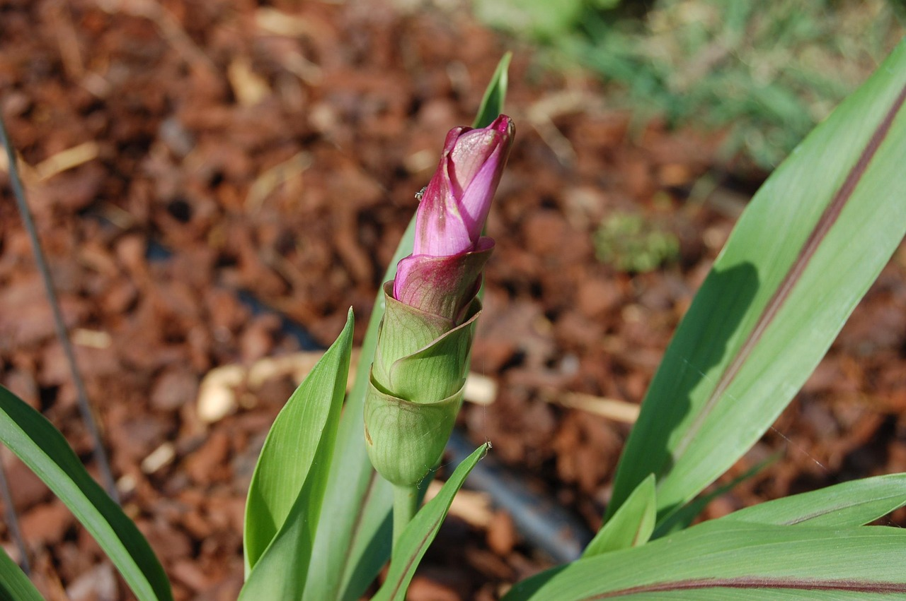
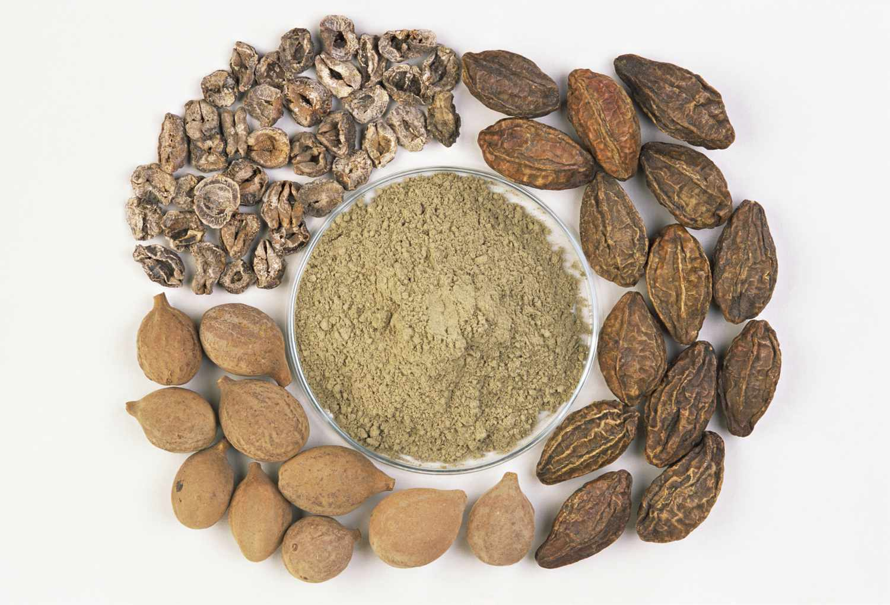
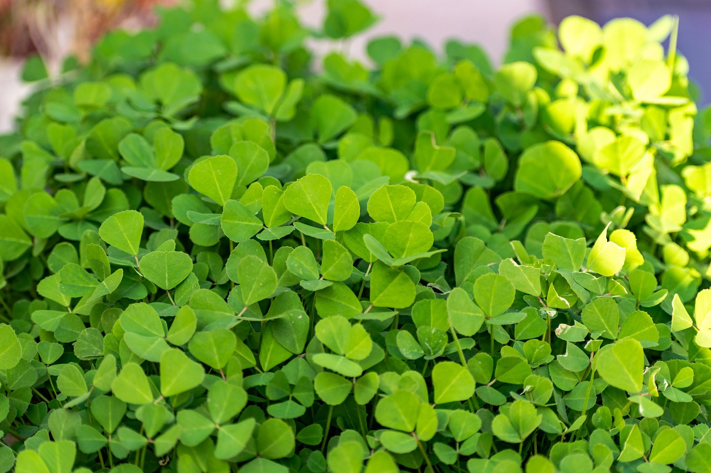

Medicinal Plants Database
Explore our comprehensive collection of medicinal plants used in AYUSH (Ayurveda, Yoga & Naturopathy, Unani, Siddha, and Homeopathy) systems. Learn about their properties, uses, and cultivation methods.






